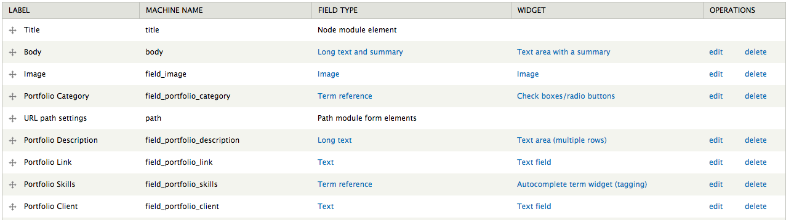
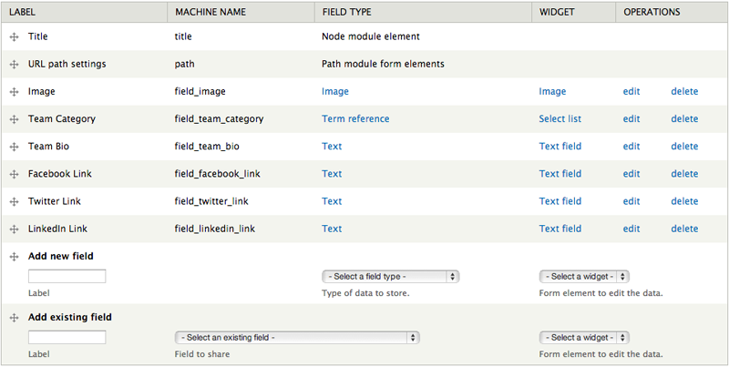

Porto is a professional, multipurpose Drupal theme perfect for any business or portfolio website. For theme support that cannot be found in this documentation, please visit our support forum. Once you have registered please contact us via the ThemeForest author page with your forum username so you can be granted posting rights.
Updated: 07/15/13
Author: Refaktor
Docs powered by: TOC
Original design by
Crivos
There are several ways Porto can be installed. For existing sites that already have content, the first method will only involve the installation and activation of the theme. The second option includes a full Drupal 7 install with the same SQL database file used to create the theme demo. Please choose which installation method works best for you and follow the instructions. We do highly recommend you perform the full install, especially if you plan on using the Commerce functionality.
The following steps are designed for people that have experience manually installing Drupal and importing databases. If you do not feel comfortable performing these steps yourself, contact your server administrator for help. NOTE this option is for a completely new Drupal install. Do not import the provided SQL file into an existing Drupal database or you will lose all of your data!
Porto comes with a shell sub-theme called Porto_sub that you can use to make customizations to the style and template structure of the parent theme without having to modify the parent theme itself. This is useful if you plan on updating the parent theme as we release updates on ThemeForest. If you performed the full install you will already see Porto_sub in the list of themes available. If you did the standalone install you can find the Porto_sub.zip file in the root of the download files and you can install it like any other theme.
There is an empty stylesheet already defined which is /css/custom.css (inside the Porto_sub folder). Use this file to add all of the custom CSS that you plan on using. You can also copy any template file from the /Porto/templates folder into the /Porto_sub/templates folder and it will listen to the sub-themes template file first. This will allow you to update the parent theme as we make updates without losing your customizations. Just pay attention to the changelog and compare the parent theme files with yours and make any adjustments as needed.
You will need to configure the sub-themes theme settings separately from the parent theme's, so visit /admin/appearance/settings/porto_sub to configure the theme settings for the sub-theme. You also need to configure the block regions separately.
Porto has a block region called Header Menu which can be used to add any menu block you like. The demo simply uses the default Main Menu block but you can create a custom menu block if you like.
You can find all of the modules used in the demo in the modules.zip archive in the root of the folder you downloaded from ThemeForest. Not all modules are required to use the theme, but below is a list of modules you will need to utilize various elements of the theme
If you used the "theme only" option to install the theme on an existing install that already has content we recommend you use our Porto Content Data module to create the additional content types, fields and Views needed to fully utilize the theme. You will find it in the root of the directory that contains the download files. This module is a custom Features module and will not run without it. We recommend copying all of the modules from the /drupal_7/sites/all/modules folder into your install if you do not already have them. After you have all the modules simply upload and activate the Porto Content Data module and the content types, fields and Views will automatically be created.
Porto includes the Drupal Mega Slider module. This module offers an incredible number of options to create the exact slider to meet your needs. To begin configuring your slider visit /admin/structure/md-slider and press the "add new slider" link. You can find documentation for the slider inside the md_slider module folder and you can reference the video below.
If you would like to use a NivoSlider image slider on your site, simply install the NivoSlider module and visit /admin/structure/nivo-slider to set up and configure your slider. A block region is created for your slider that you can use in any block region of your choosing.
The front page seen on the Porto demo consists of a Mega Slider block and some additional block regions with different markup. You can find all of the markup used on the demo front page inside the /examples/front-page-blocks folder in the root of the theme folder.
The "Latest Block Posts" area in the Map Region block calls a View block called "Latest Posts". If you don't already have this View you can use the code in views-exports/latest-posts.txt to import this View for use in this block region.
Porto utilizes two custom content types which have their own custom theme template files that are used to achieve different layouts and styles. If you are not working off of the full demo install please use the Porto Content Data plugin referenced above to automatically generate all these content types and their fields. We will also go over each of the content types as well as their fields and corresponding template files below:
This content type is used to manage the portfolio items used in the Portfolio block. Below is the list of fields and corresponding template files used by this content type:
Fields:
Template files:
This content type is used to create the content used in the Testimonials view block.
Fields:
Template files:
Visit /admin/appearance/settings/Porto to configure your theme's settings. You can select your color scheme, add your own custom CSS, add your own custom logo, etc.
This is the standard Portfolio style which utilizes the "Portfolio Block Page" View. If you are not using the full demo or did not use the Custom Content module you can use the code in /views_exports/portfolio-block.txt to import this View. Then simply place the "View: Portfolio Block" in the Content region and configure the block visibility settings to your liking.
Template files
To change the number of items appear in a row in the Portfolio block visit the theme settings (/admin/appearance/settings/Porto).
Template files
The Portfolio includes support for an Isotope filter effect powered by Taxonomy terms. To utilize this effect visit /admin/structure/taxonomy and create a new vocabulary (example: Portfolio). After creating your vocabulary you can create the terms you wish to use to categorize your portfolio items. This taxonomy vocabulary can be linked to the Portfolio content type via a term reference field so you can select the category or categories you want to place your items into.
The filters are powered by a View called Portfolio Filters that is placed in the View header as a global view area. If you don't already have this view you can use the code in /views_exports/portfolio-filters.txt to import as a View for placement in the View header of the Portfolio view.
Template files
Somewhat similar to the Portfolio, the Team block can be used to showcase your site or company's team members. If you are not using the full demo or did not use the Custom Content module you can use the code in /views_exports/team.txt to import this View. Then simply place the "View: Team" in the Content region and configure the block visibility settings to your liking.
Template files
The Team block view also includes support for an Isotope filter effect powered by Taxonomy terms. To utilize this effect visit /admin/structure/taxonomy and create a new vocabulary (example: Team). After creating your vocabulary you can create the terms you wish to use to categorize your portfolio items. This taxonomy vocabulary can be linked to the Team content type via a term reference field so you can select the category or categories you want to place your items into.
The filters are powered by a View called Team Filters that is placed in the View header as a global view area. If you don't already have this view you can use the code in /views_exports/team-filters.txt to import as a View for placement in the View header of the Team view.
Template files
The Porto demo uses a View to display the article content type nodes. If you do not already have this View using one of our different installation methods you can use the code found in /views-exports/blog.txt to import the View and all its settings. To change the style of image on that View page you can use the Blog View Image option in the theme settings (/admin/appearance/settings/Porto).
Porto features 14 block regions where you can add your own custom content. Visit yourdomain.com/admin/structure/block to add your own content to the defined block regions. Press "Add Block" to create a new custom blog, or select an existing block from the Disabled list below the defined block regions.
Porto features four header regions: Header Branding, Header Top, Header Menu and Header Icons. You can use the "demonstrate block regions" link on /admin/structure/block to see exactly where these are located, but the names are fairly self explanatory. If you would like to mimic the social icon region seen next to the menu on the demo you can use the following markup in a block:
<div class="social-icons"> <ul class="social-icons"> <li class="facebook"><a href="http://www.facebook.com/" target="_blank" title="Facebook">Facebook</a></li> <li class="twitter"><a href="http://www.twitter.com/" target="_blank" title="Twitter">Twitter</a></li> <li class="linkedin"><a href="http://www.linkedin.com/" target="_blank" title="Linkedin">Linkedin</a></li> </ul> </div>
Porto has a total of 5 content block regions: Before Content, Content, Sidebar Left, Sidebar Right and After Content. Like the Header regions described above these regions are fairly self explanatory. One thing to note is that the before and after content regions are called outside of the main content wrap so you can use completely full width content (like the Image Slider) or use your own custom wrappers. Those regions are there to do whatever you like with and are not restricted by any additional markup.
Porto also supports Flexslider, and to display a slideshow in your articles simply upload more than one image to the Image field setting when editing your article node.
Finally there are 6 footer block regions available, four individual four column regions and two additional six column regions below.
We've included some code examples inside the /examples folder in the root of the theme with some markup used on several of the demo page templates.
The following markup can be used to generate a Flickr Feed anywhere on your site:
<script>
jQuery(document).ready(function ($) {
$('ul.flickr-feed').jflickrfeed({
limit: 6,
qstrings: {
id: '93691989@N03'
},
itemTemplate: '<li><a rel="flickr" href="{{image_b}}"><span class="thumbnail"><img alt="{{title}}" src="{{image_s}}" /></span></a></li>'
});
});
</script>
Before you can use the Twitter widget you need to configure the Twitter options in the theme settings (/admin/appearance/settings/porto). To get the necessary authentication keys you must visit https://dev.twitter.com/apps and log in with your Twitter account. Once there you can create an app and generate the OAuth keys needed to enter into the theme settings. Once you have those entered you can use the following markup in a Block (make sure to set the text filter to PHP code):
<h6 class="whitetext bold meta">PortoON TWITTER</h6>
<div class='tweet query midtoppadding'></div>
<script type="text/javascript">
jQuery(document).ready(function ($) {
$(".tweet").tweet({
modpath: '<?php global $theme_root; echo $theme_root;?>/includes/twitter/',
username: "envato",
avatar_size: 34,
count: 3,
loading_text: "loading tweets..."
});
});
</script>
Thank you very much for purchasing the Porto Responsive Drupal 7 theme. Once again if you have any issues or feedback please connect via the ThemeForest author page. Enjoy using Porto!
© 2013 Refaktor.